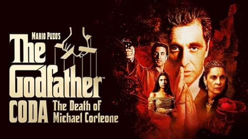

Кумот 3 (1990)
Кумот Кода (2020)
20 Јан 2026
Кумот 3 ја заокружува сагата со обидот на Мајкл Корлеоне да се ослободи од минатото и да го спаси семејството од сопствените грешки. Тажен и зрел филм за каење, наследство и цената што ја плаќаат оние што предолго живееле со моќта.